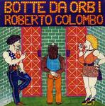

| Artist: | Roberto Colombo |
| Title: | Botte Da Orbi |
| Label: | Ultima Spiagga/Sublime Records |
| Length(s): | 35 minutes |
| Year(s) of release: | 1977/1999 |
| Month of review: | [02/2003] |
| 1) | Ascolta Si Fa Sera | 5.15 |
| 2) | Botte Da Orbi | 1.54 |
| 3) | Fiato Alle Trombe | 5.46 |
| 4) | Dai Non Fare Il Romantico | 4.39 |
| 5) | Alegher Alegher | 5.42 |
| 6) | Danza Disumana | 4.53 |
| 7) | Il Ritorno Di Li Kembe | 6.07 |
| 8) | Fine Del Trentatre | 1.20 |
After the short Botte Da Orbi we move into the horn dominated Fiato Alle Trombe. There is a strong big band feel here, and like on the previous tracks, a sense of humour (which also helps distinguish it from Zeuhl, which is very serious indeed). Sometimes the music is maybe a bit too frolic and over the top, but it is generally quite groovy, which helps.
On Dai Non Fare Il Romantico, the music starts off with a mellow melody, dreamy and yes romantic. This is quite a good melody here, comparable to older work of Steve Hackett, but jazzier. The age of the recording is revealed somewhat here by the noise level in the quieter moments, especially if you turn it up loud.
Children's laughter opens Alegher Alegher, which is one full of disjoint tunes and off-beatiness. The link to Zappa is strong, but in my mind Colombo goes further into the avant-garde site. It does share that marimba plus big band feel. Time for a wailing violin solo then, and a bit more beat. You might be tempted to think of Kansas here. A very disjointed track. The soloing is at some point taken over by a meandering sax. The tense hammered piano at the end is nice.
Danza Disumana moves more in the direction of complex wind orchestra and avant-garde. The percussion and swirling trumpet also gives the song a World music feel. The pace is slow, and off-beat. Lots of repetition here, all these instrumentalists playing their tunes with small variation. Almost minimalist, but then the scatting is not really to be expected.
On Il Ritorno Di Li Kembe we follow the same line as on the previous track. What is this? A samba? Well something of the kind, with all the instruments contributing their own small little bit. There are also parallels with the jazz of Chick Corea and his buddies, although the percussion is a bit darker, more African. A bit boring this one.
Fine Del Trentatre is a short tune with a good vocal melody. The bleepy keyboards are very seventies, a bit ELPish.